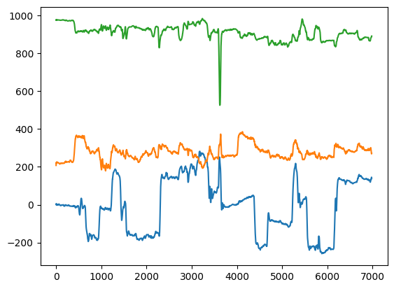
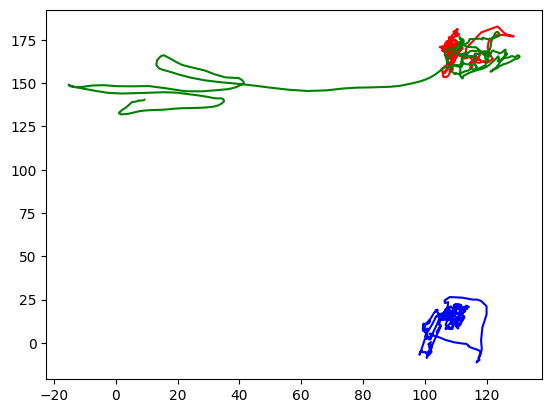

Center of Mass vs Base of Support analysis
Contents
Center of Mass vs Base of Support analysis#
This is an iPython Jupyter Notebook to let us look at some of the data we collected in class on 2022-09-26
Install (using pip and then import the python packages we’ll need)#
!pip install numpy
!pip install pandas
!pip install matplotlib
Requirement already satisfied: numpy in /opt/hostedtoolcache/Python/3.9.14/x64/lib/python3.9/site-packages (1.23.4)
[notice] A new release of pip available: 22.2.2 -> 22.3
[notice] To update, run: pip install --upgrade pip
Requirement already satisfied: pandas in /opt/hostedtoolcache/Python/3.9.14/x64/lib/python3.9/site-packages (1.5.1)
Requirement already satisfied: python-dateutil>=2.8.1 in /opt/hostedtoolcache/Python/3.9.14/x64/lib/python3.9/site-packages (from pandas) (2.8.2)
Requirement already satisfied: pytz>=2020.1 in /opt/hostedtoolcache/Python/3.9.14/x64/lib/python3.9/site-packages (from pandas) (2022.5)
Requirement already satisfied: numpy>=1.20.3 in /opt/hostedtoolcache/Python/3.9.14/x64/lib/python3.9/site-packages (from pandas) (1.23.4)
Requirement already satisfied: six>=1.5 in /opt/hostedtoolcache/Python/3.9.14/x64/lib/python3.9/site-packages (from python-dateutil>=2.8.1->pandas) (1.16.0)
[notice] A new release of pip available: 22.2.2 -> 22.3
[notice] To update, run: pip install --upgrade pip
Requirement already satisfied: matplotlib in /opt/hostedtoolcache/Python/3.9.14/x64/lib/python3.9/site-packages (3.6.0)
Requirement already satisfied: fonttools>=4.22.0 in /opt/hostedtoolcache/Python/3.9.14/x64/lib/python3.9/site-packages (from matplotlib) (4.37.4)
Requirement already satisfied: pillow>=6.2.0 in /opt/hostedtoolcache/Python/3.9.14/x64/lib/python3.9/site-packages (from matplotlib) (9.2.0)
Requirement already satisfied: packaging>=20.0 in /opt/hostedtoolcache/Python/3.9.14/x64/lib/python3.9/site-packages (from matplotlib) (21.3)
Requirement already satisfied: pyparsing>=2.2.1 in /opt/hostedtoolcache/Python/3.9.14/x64/lib/python3.9/site-packages (from matplotlib) (3.0.9)
Requirement already satisfied: cycler>=0.10 in /opt/hostedtoolcache/Python/3.9.14/x64/lib/python3.9/site-packages (from matplotlib) (0.11.0)
Requirement already satisfied: numpy>=1.19 in /opt/hostedtoolcache/Python/3.9.14/x64/lib/python3.9/site-packages (from matplotlib) (1.23.4)
Requirement already satisfied: python-dateutil>=2.7 in /opt/hostedtoolcache/Python/3.9.14/x64/lib/python3.9/site-packages (from matplotlib) (2.8.2)
Requirement already satisfied: kiwisolver>=1.0.1 in /opt/hostedtoolcache/Python/3.9.14/x64/lib/python3.9/site-packages (from matplotlib) (1.4.4)
Requirement already satisfied: contourpy>=1.0.1 in /opt/hostedtoolcache/Python/3.9.14/x64/lib/python3.9/site-packages (from matplotlib) (1.0.5)
Requirement already satisfied: six>=1.5 in /opt/hostedtoolcache/Python/3.9.14/x64/lib/python3.9/site-packages (from python-dateutil>=2.7->matplotlib) (1.16.0)
[notice] A new release of pip available: 22.2.2 -> 22.3
[notice] To update, run: pip install --upgrade pip
import numpy as np
import pandas as pd
import matplotlib
import matplotlib.pyplot as plt
from pathlib import Path
# matplotlib.use("qt5agg")
%matplotlib inline
Get the paths to the files and data we’ll need#
# folders and stuff
freemocap_data_folder_path = Path(r"C:\Users\jonma\Dropbox\Northeastern\Courses\Biol2299\2022_09_Fall_Biol2299_Inquiries_NeuralControlOfRealWorldBehavior\freemocap_bos_com_standing_data\FreeMocap_Data")
session_id = "sesh_2022-09-28_15_45_39"
session_folder_path = freemocap_data_folder_path / session_id
data_arrays_path = session_folder_path/'DataArrays'
#Specific file paths
com_xyz_npy_path = data_arrays_path / "totalBodyCOM_frame_XYZ.npy"
skeleton_body_dots_csv_path = data_arrays_path / "mediapipe_body_3d_xyz.csv"
# load the data in
com_xyz = np.load(com_xyz_npy_path)
skeleton_dataframe = pd.read_csv(skeleton_body_dots_csv_path)
---------------------------------------------------------------------------
FileNotFoundError Traceback (most recent call last)
Cell In [5], line 3
1 # load the data in
----> 3 com_xyz = np.load(com_xyz_npy_path)
4 skeleton_dataframe = pd.read_csv(skeleton_body_dots_csv_path)
File /opt/hostedtoolcache/Python/3.9.14/x64/lib/python3.9/site-packages/numpy/lib/npyio.py:390, in load(file, mmap_mode, allow_pickle, fix_imports, encoding)
388 own_fid = False
389 else:
--> 390 fid = stack.enter_context(open(os_fspath(file), "rb"))
391 own_fid = True
393 # Code to distinguish from NumPy binary files and pickles.
FileNotFoundError: [Errno 2] No such file or directory: 'C:\\Users\\jonma\\Dropbox\\Northeastern\\Courses\\Biol2299\\2022_09_Fall_Biol2299_Inquiries_NeuralControlOfRealWorldBehavior\\freemocap_bos_com_standing_data\\FreeMocap_Data/sesh_2022-09-28_15_45_39/DataArrays/totalBodyCOM_frame_XYZ.npy'
# pull out the data from the `nose` marker
nose_x = skeleton_dataframe["nose_x"]
nose_y = skeleton_dataframe["nose_y"]
nose_z = skeleton_dataframe["nose_z"]
print(f"nose_x.shape: {nose_x.shape}") #make sure the data is the shape we expect
nose_x.shape: (6980,)
# simple plot of `com_xyz` time series
fig1 = plt.Figure()
# fig1.suptitle("Nose Timeseries")
# ax = fig1.add_subplot()
plt.plot(nose_x)
plt.plot(nose_y)
plt.plot(nose_z)
# ax.legend()
# plt.plot(np.diff(nose_y))
# plt.plot(np.diff(nose_z))
plt.show()

right_toe_x = skeleton_dataframe["right_foot_index_x"]
right_toe_y = skeleton_dataframe["right_foot_index_y"]
right_toe_z = skeleton_dataframe["right_foot_index_z"]
right_heel_x = skeleton_dataframe["right_heel_x"]
right_heel_y = skeleton_dataframe["right_heel_y"]
right_heel_z = skeleton_dataframe["right_heel_z"]
cx = com_xyz[np.arange(2500,3500),0]
cy = com_xyz[np.arange(2500,3500),1]
fig2 = plt.Figure()
# ax = fig2.add_subplot()
plt.plot(right_toe_x[2500:3500], right_toe_y[2500:3500], 'r')
plt.plot(right_heel_x[2500:3500], right_heel_y[2500:3500], 'b')
plt.plot(cx, cy, 'g')
plt.show()
